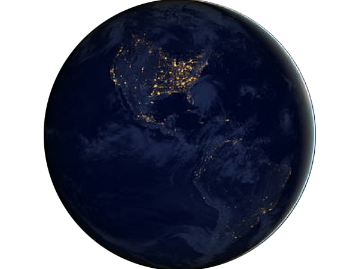
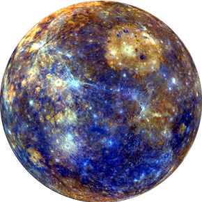
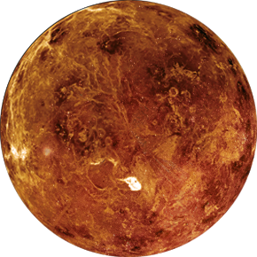
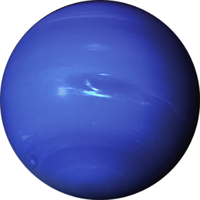
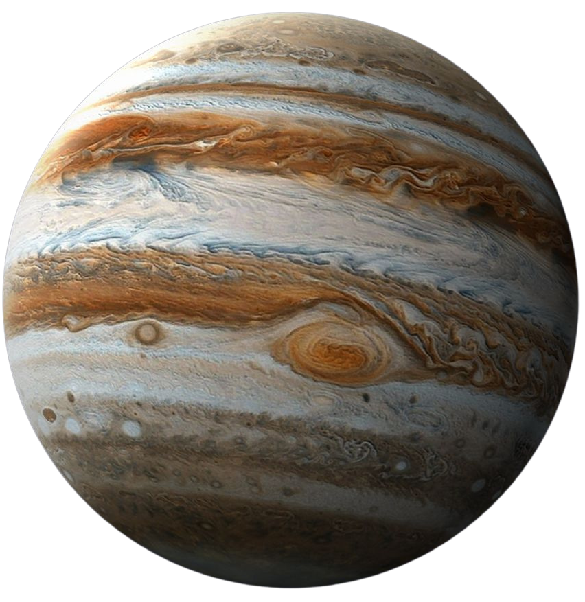
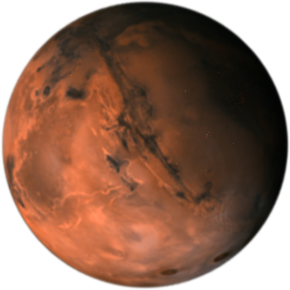
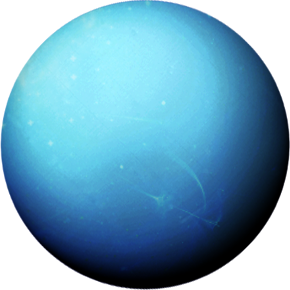
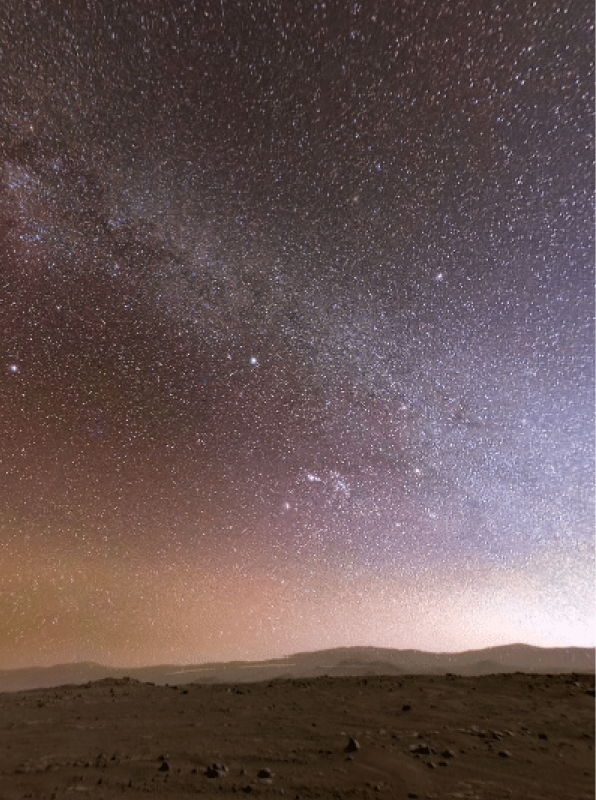
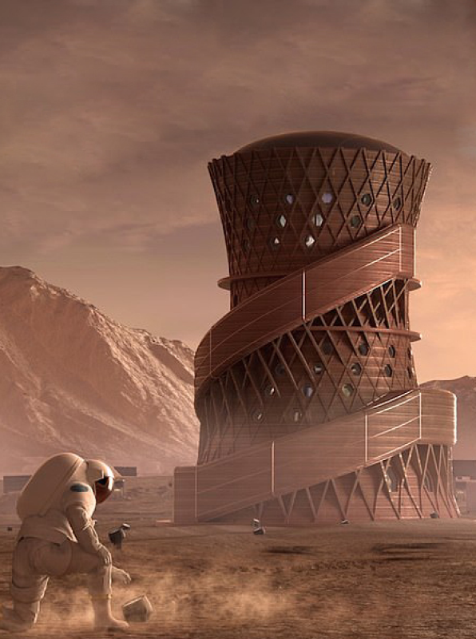

제임스웹 망원경의 외계행성 심층 관측 데이터 공개
새로운 대기 구성 성분이 발견되어 수증기 및 대기층 연구가 한층 탄력을 받고 있습니다.

1장. 성운 NEBULA

2장. 은하 GALAXY

3장. 블랙홀 BLACKHOLE

4장. 은하수 MILKYWAY

5장. 성단 STAR CLUSTER

우주에는 우리와 같은 행성계가 많이 있는데, 행성들은 항상 주위를 돌고 있다. 우리 행성계는 태양을 뜻하는 라틴어 '솔리스'와 태양과 관련된 모든 것의 이름을 따서 '솔'로 명명되었기 때문에 '태양계'라고 불린다.
태양의 라틴어 '솔(Sol)'에서 유래한 우리 행성계의 기원.
모든 행성과 천체들은 태양의 중력 이끌림에 따라 궤도를 순환합니다.
수성부터 왜소행성 세레스까지, 태양계 전역을 향한 항해.
 NEBULA
NEBULA
대마젤란운에 위치한 NGC 2014와 NGC 2020의 모습. 붉은 빛을 띄는 성운과 파란 빛의 별무리가 아름답게 어우러집니다.
 GALAXY
GALAXY
지구와 가장 가까운 나선 은하로, 암청회색 고리들은 뜨겁고 어린 별들의 보금자리입니다.
 BLACK HOLE
BLACK HOLE
최초로 관측된 강력한 X선 블랙홀 천체. 주변 시공간의 거대한 충격파가 관측됩니다.

태양계의 첫 번째 행성이자 가장 작은 행성

지구의 쌍둥이 행성

아름다운 청록색의 거대한 얼음 행성

단단한 지표면이 없는 거대 기체 행성

인류의 제2 거주지로 각광받는 붉은 행성

태양계의 마지막 여덟 번째 행성


지구를 떠나지 않고 화성의 생존 환경을 그대로 재현한 모의 기지에서 1년간 임무를 수행할 대원을 모집합니다. 미래의 유인 우주 탐사에 필요한 기술 개발에 직접 참여해 보세요.
새로운 대기 구성 성분이 발견되어 수증기 및 대기층 연구가 한층 탄력을 받고 있습니다.
성공적인 모듈 결합으로 유인 달 기지 건설 준비의 중요한 교두보가 마련되었습니다.
얼음 껍질 아래 존재하는 내부 바다의 환경 연구가 본격적으로 시작되었습니다.